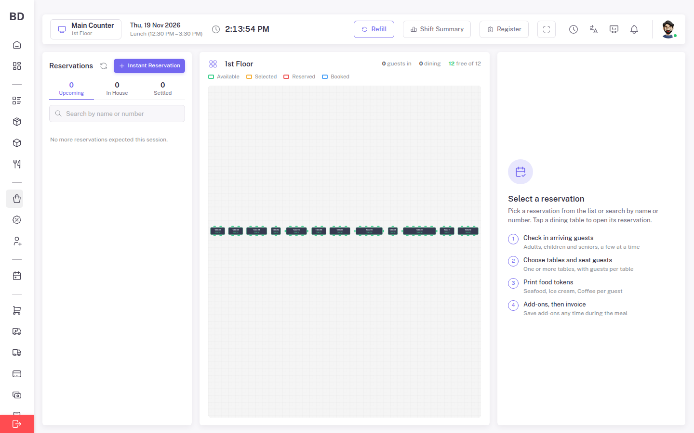
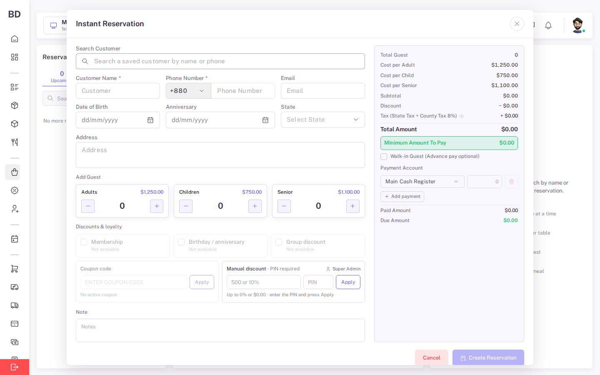

POS: Check-in & Billing
The POS screen: reservations, floor plan, check-in, tokens, invoice and settle.
You need an open register. If you have none, Sale > POS sends you to Open Register (see Login & Open Register).
The POS screen
Three columns and a top bar
- Top bar: your counter, the date and meal time, and the buttons Refill, Shift Summary and Register.
- Left: Reservations. The Instant Reservation button, the tabs Upcoming, In House and Settled (and Unsettled when a bill from an earlier meal time is still open), and a search by name or number.
- Middle: floor plan of your counter's floor, with how many guests are in, dining, and how many tables are free.
- Right: the selected reservation: check-in, tokens, add-ons, running bill and Generate invoice.

What the seat colours mean
- Available (green): free seats.
- Selected (yellow): seats of the reservation you have selected or are choosing tables for.
- Reserved (red): seats taken by guests who are already checked in.
- Booked (blue): seats held for a booking whose guests have not arrived yet.
Tapping a table (outside Choose Table mode) selects the party seated there; tap again to move to the next party on a shared table. Tapping a blue table opens that booking. After a bill is settled the table shows Cleaning; tap it and click Mark ready once it has been reset.
Checking guests in
Select the reservation
- Booked guests: pick them in the Upcoming tab (or search by name or number).
- Walk-in guests: click Instant Reservation, enter the Customer Name and Phone Number (or search a saved customer), set the Adults, Children and Senior counts with + and −, tick Walk-in Guest (Advance pay optional) if no advance is taken, and click Create Reservation. The new reservation is selected for you.

Check in the guests who are here
- In the right panel under Guests arriving now, enter how many adults, children and seniors have arrived. You can check guests in a few at a time.
- Optional: click Choose Table. Only in this mode do you tap tables: tap free tables to add or remove them, then set the guests per table in the right panel. Cancel leaves the mode.
- Click Check in N & print N tokens. If the meal time has no token items, the button is Check in N. The tokens window opens: click Print N slips, or Later.
Guests who never come: click No Show and confirm. The reservation is cancelled and its tables are freed. If an advance was paid, see Reservations, Cancellations & Refunds.
More guests than booked: check them in anyway. They are charged at the per-person price.
Add-ons and stock limits
Under Add-on food • Chargeable, staff can add paid extras (such as bottled drinks or specialty dishes) during the meal:
- An add-on that is a stock Item shows its stock on the card ("Stock: N", or "Out of stock").
- Tap + to add one. You cannot go above the stock: the POS shows Only N [unit] of "[name]" left in stock, or "[name]" is out of stock.
- Click Save add-ons. If any of them are token items, click Save & Print Token to print one slip per item. Add-ons are added to the bill.
- Lost tokens: click Reprint in the Check-in history.
Billing
Generate invoice, take payment, Settle & close
- Select the party (from In House, or tap their table). The right panel shows the Running bill.
- Click Generate invoice. The invoice window opens.
- Optional discounts: under Discounts & loyalty pick an available one (Membership, Birthday / anniversary, Group discount); or enter a Coupon code and click Apply; or enter a Manual discount (an amount or a %), the approver's 4-digit PIN, and click Apply.
- Optional: Wastage penalty (number of plates with too much leftover food), and Loyalty Points to redeem if the customer has enough.
- Under Payment, choose Split bill (No split, or 2 ways or more), then for each share pick the payment method and amount. One share can mix methods (Add payment method).
- Click Print bill if the guest wants to check it first, then Settle & close.
A booking advance already paid is taken off the bill as Deposit adjusted. After settling, the party moves to the Settled tab, where Reprint invoice is available.
Past Invoices: Sale > List Sale
Find, view, reprint, and export invoices
To review or reprint past customer bills after they leave the POS screen, go to Sale > List Sale:
- Search with the box "Search by invoice, reservation or customer".
- Under Sale Filter choose the Date From, Date To, counter, register and meal time, then click Submit (Reset Filters clears them).
- The list shows Invoice No, Date & Time, Reservation, Customer, Counter, Guests, Gross Sales, Discount, Tax, Total and Status.
- Click the eye icon (View & Reprint) to see the invoice and its Payments, then Reprint to print it again.
- Export offers Export as CSV, Export as Excel, Export as PDF and Print.
Common messages
| Message | Why | What to do |
|---|---|---|
| Only N [unit] of "[name]" left in stock / "[name]" is out of stock | You tried to add more add-on items than available inventory. | Adjust the quantity to match available stock or replenish stock in inventory. |
| Not enough stock for "[name]": only N [unit] left. | When saving, the stock was already lower (for example another counter sold it first). | Lower the add-on quantity to the remaining stock balance. |
| "Wrong PIN." | The 4-digit discount PIN is not right for that manual discount. | Ask the approver to type their own PIN. After several wrong tries you must wait before trying again. |
| "This PIN allows a discount up to [amount]." / "The discount cannot be more than [amount] for this PIN." | The discount is bigger than the limit set on that manual discount. | Lower the discount, or use a PIN of a manual discount with a higher limit. |
| "Share [N] is paid more than its amount. Change can only be returned with a cash payment." | A card, bank or wallet payment is more than the share. | Enter the exact amount for non-cash payments; give change only on cash. |
| "No active payment account. Add one in Payment Accounts to settle bills." | There is no active payment account. | A manager adds one in Payment Account > Add Payment Account. |
| Coupon: "Invalid coupon", "Coupon expired", "Coupon is not active yet", "Usage limit reached" | The code is wrong, outside its dates, or used up. | Check the code with the guest, or remove it. |